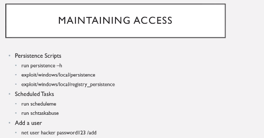

if something haopens to machine we ave a way to gain access back to a machine
if he shuts down his machine our shell goes na so there are ways to maintain access to a machine
theya re advanced techniques
Atmost u would add a user and then use psexec to get back the shell
as u area a pentestester so u wont do that complicated stuff
persistence scripts are all metasploit and are dangerous coz u are opening a port without any athentication
u can be a bit noisy too